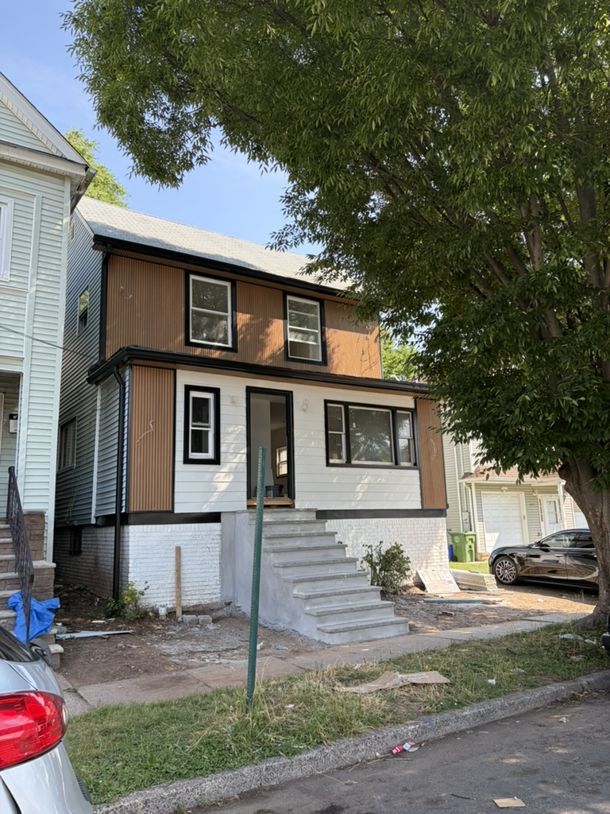
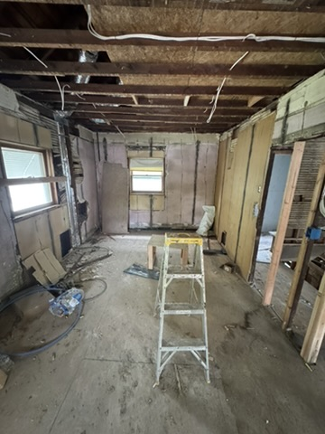
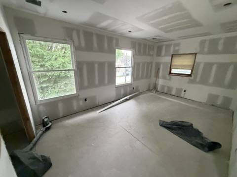
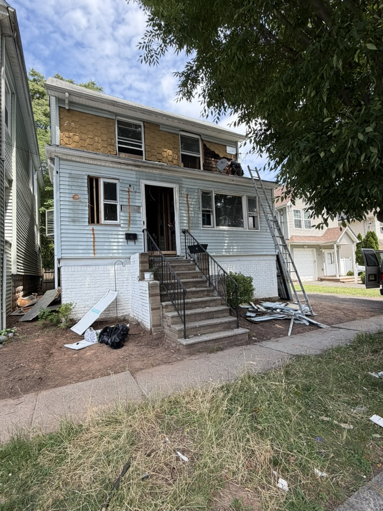

Before
BeforeStarting point
Opened to the structure
The room was taken back to its framing so systems, surfaces, and the spatial layout could be rebuilt correctly.

Roselle, New Jersey
Follow the transformation from demolition through construction—and return soon for the finished reveal.
Project overview
This Roselle property is being renewed inside and out. The work includes rebuilt living spaces, a fully reworked bedroom, and a contemporary exterior transformation designed to give the home a strong new identity.
Interior renovation
From exposed framing and structural work to drywall, lighting, and a bright open plan.
BeforeThe room was taken back to its framing so systems, surfaces, and the spatial layout could be rebuilt correctly.
 Work in progress
Work in progressFresh drywall, recessed lighting, and a clean open transition now define the future living area.
Interior renovation
A complete rebuild creating a quiet, bright, and thoughtfully finished private space.

BeforeWalls and ceiling were opened to allow comprehensive electrical, insulation, and surface improvements.

Work in progressNew drywall and window surrounds establish the room while finish preparation continues.
Exterior renovation
A bold facade update that brings depth, warmth, and a more contemporary presence.

BeforeThe facade was stripped and prepared for new cladding, trim, openings, and entry improvements.
Warm vertical cladding, crisp black trim, and a brighter masonry base are transforming the street presence.
Project journal
We’ll update this page as each space moves from active construction to finished home.
Back to projects ↗